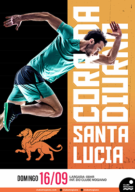

Corrida Diurna
Projeto de identidade visual desenvolvido para o evento Corrida Diurna.
Projeto de identidade visual desenvolvido para o evento Corrida Diurna.
Projeto de identidade visual desenvolvido para o evento de seletiva da modalidade de handebol.
Projeto de identidade visual desenvolvido para aulas que unem diferentes tipos de exercícios.